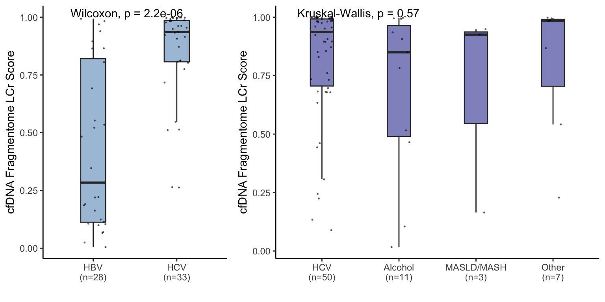
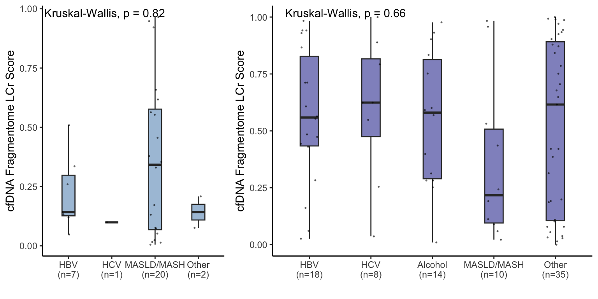
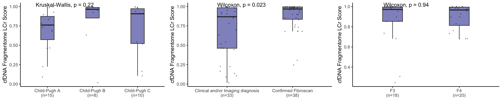
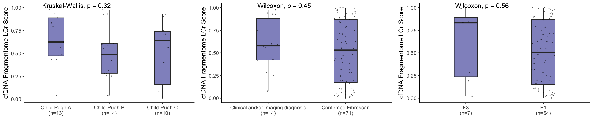
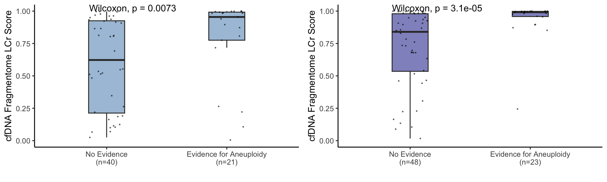
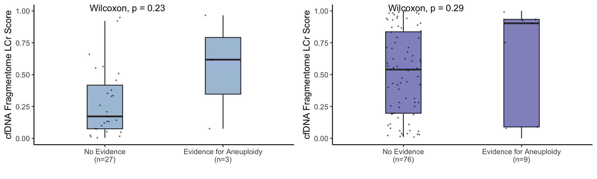

Last updated: 2026-01-11
Checks: 7 0
Knit directory: Annapragada2025/
This reproducible R Markdown analysis was created with workflowr (version 1.7.1). The Checks tab describes the reproducibility checks that were applied when the results were created. The Past versions tab lists the development history.
Great! Since the R Markdown file has been committed to the Git repository, you know the exact version of the code that produced these results.
Great job! The global environment was empty. Objects defined in the global environment can affect the analysis in your R Markdown file in unknown ways. For reproduciblity it’s best to always run the code in an empty environment.
The command set.seed(20251119) was run prior to running
the code in the R Markdown file. Setting a seed ensures that any results
that rely on randomness, e.g. subsampling or permutations, are
reproducible.
Great job! Recording the operating system, R version, and package versions is critical for reproducibility.
Nice! There were no cached chunks for this analysis, so you can be confident that you successfully produced the results during this run.
Great job! Using relative paths to the files within your workflowr project makes it easier to run your code on other machines.
Great! You are using Git for version control. Tracking code development and connecting the code version to the results is critical for reproducibility.
The results in this page were generated with repository version 1073f80. See the Past versions tab to see a history of the changes made to the R Markdown and HTML files.
Note that you need to be careful to ensure that all relevant files for
the analysis have been committed to Git prior to generating the results
(you can use wflow_publish or
wflow_git_commit). workflowr only checks the R Markdown
file, but you know if there are other scripts or data files that it
depends on. Below is the status of the Git repository when the results
were generated:
Ignored files:
Ignored: .DS_Store
Ignored: analysis/.Rhistory
Ignored: data/.DS_Store
Ignored: output/useful.stuff.aa/raw-data/
Untracked files:
Untracked: data/MICA_variable_bins.csv
Unstaged changes:
Modified: analysis/Fig2A_6A_S_5A_21.Rmd
Modified: analysis/Fig5_A.Rmd
Modified: analysis/Fig5_B.Rmd
Modified: analysis/Fig6_B.Rmd
Modified: data/circos_fragmentation.csv
Deleted: data/longbins_mica_processed.csv
Modified: output/cohort_create.r
Note that any generated files, e.g. HTML, png, CSS, etc., are not included in this status report because it is ok for generated content to have uncommitted changes.
These are the previous versions of the repository in which changes were
made to the R Markdown (analysis/S4_6_p2.Rmd) and HTML
(docs/S4_6_p2.html) files. If you’ve configured a remote
Git repository (see ?wflow_git_remote), click on the
hyperlinks in the table below to view the files as they were in that
past version.
| File | Version | Author | Date | Message |
|---|---|---|---|---|
| html | 1073f80 | shay-279 | 2026-01-09 | re-ran just for fun before zenodo upload |
| Rmd | ad5f281 | shay-279 | 2025-11-19 | push stuff |
| html | ad5f281 | shay-279 | 2025-11-19 | push stuff |
library(here)here() starts at /Users/akshayaannapragada/Dropbox/ScannedNotes/VelculescuLab/Cancer Genomics Lab/Projects/Not cancer fragmentome/Manuscript/Final Github Repos for Publications/Annapragada2025library(data.table)
library(tidyverse)── Attaching core tidyverse packages ──────────────────────── tidyverse 2.0.0 ──
✔ dplyr 1.1.4 ✔ readr 2.1.5
✔ forcats 1.0.0 ✔ stringr 1.5.1
✔ ggplot2 3.5.1 ✔ tibble 3.2.1
✔ lubridate 1.9.4 ✔ tidyr 1.3.1
✔ purrr 1.0.4 ── Conflicts ────────────────────────────────────────── tidyverse_conflicts() ──
✖ dplyr::between() masks data.table::between()
✖ dplyr::filter() masks stats::filter()
✖ dplyr::first() masks data.table::first()
✖ lubridate::hour() masks data.table::hour()
✖ lubridate::isoweek() masks data.table::isoweek()
✖ dplyr::lag() masks stats::lag()
✖ dplyr::last() masks data.table::last()
✖ lubridate::mday() masks data.table::mday()
✖ lubridate::minute() masks data.table::minute()
✖ lubridate::month() masks data.table::month()
✖ lubridate::quarter() masks data.table::quarter()
✖ lubridate::second() masks data.table::second()
✖ purrr::transpose() masks data.table::transpose()
✖ lubridate::wday() masks data.table::wday()
✖ lubridate::week() masks data.table::week()
✖ lubridate::yday() masks data.table::yday()
✖ lubridate::year() masks data.table::year()
ℹ Use the conflicted package (<http://conflicted.r-lib.org/>) to force all conflicts to become errorslibrary(devtools)Loading required package: usethislibrary(ggplot2)
library(ggpubr)
library(cowplot)
Attaching package: 'cowplot'
The following object is masked from 'package:ggpubr':
get_legend
The following object is masked from 'package:lubridate':
stamplibrary(viridis)Loading required package: viridisLitelibrary(pROC)Type 'citation("pROC")' for a citation.
Attaching package: 'pROC'
The following objects are masked from 'package:stats':
cov, smooth, varlibrary(readxl)dat<-fread(here("data","All_LCr_Clinical_Metadata_withscores.csv"))
dat<-dat %>% filter(type=="Liver Disease/Early Fibrosis")
dat<-dat %>% mutate(type2=if_else(type2=="NASH","MASLD/MASH",type2))
n<-dat %>% group_by(training,type2) %>% dplyr::summarize(n=n())`summarise()` has grouped output by 'training'. You can override using the
`.groups` argument.dat<-inner_join(dat,n,by=c("training","type2"))
dat$name<-paste0(dat$type2,"\n(n=",dat$n,")")
dat$name<-factor(dat$name,levels=c("HBV\n(n=28)", "HBV\n(n=7)", "HCV\n(n=33)", "HCV\n(n=1)", "MASLD/MASH\n(n=20)","Other\n(n=2)"))
p1d<-ggplot(dat %>% filter(training=="Discovery"),aes(x=name,y=score))+geom_boxplot(outlier.shape=NA,alpha=.5,width=.3,fill="steelblue")+geom_jitter(size=.25,color="black",alpha=.5,width=.15)+theme_classic()+labs(fill="")+theme(strip.background = element_blank(),strip.text=element_text(size=18))+ylab("cfDNA Fragmentome LCr Score")+xlab("")+theme(legend.position="none")+stat_compare_means()
p1v<-ggplot(dat %>% filter(training=="Validation"),aes(x=name,y=score))+geom_boxplot(outlier.shape=NA,alpha=.5,width=.3,fill="steelblue")+geom_jitter(size=.25,color="black",alpha=.5,width=.15)+theme_classic()+labs(fill="")+theme(strip.background = element_blank(),strip.text=element_text(size=18))+ylab("cfDNA Fragmentome LCr Score")+xlab("")+theme(legend.position="none")+stat_compare_means()dat<-fread(here("data","All_LCr_Clinical_Metadata_withscores.csv"))
dat<-dat %>% filter(type=="Advanced Fibrosis/Cirrhosis")
dat<-dat %>% mutate(type2=if_else(type2=="NASH","MASLD/MASH",type2))
n<-dat %>% group_by(training,type2) %>% dplyr::summarize(n=n())`summarise()` has grouped output by 'training'. You can override using the
`.groups` argument.dat<-inner_join(dat,n,by=c("training","type2"))
dat$name<-paste0(dat$type2,"\n(n=",dat$n,")")
dat$name<-factor(dat$name,levels=c("HBV\n(n=18)", "HCV\n(n=50)", "HCV\n(n=8)", "Alcohol\n(n=14)","Alcohol\n(n=11)","MASLD/MASH\n(n=3)", "MASLD/MASH\n(n=10)","Other\n(n=7)","Other\n(n=35)"))
p2d<-ggplot(dat %>% filter(training=="Discovery"),aes(x=name,y=score))+geom_boxplot(outlier.shape=NA,alpha=.5,width=.3,fill="darkblue")+geom_jitter(size=.25,color="black",alpha=.5,width=.15)+theme_classic()+labs(fill="")+theme(strip.background = element_blank(),strip.text=element_text(size=18))+ylab("cfDNA Fragmentome LCr Score")+xlab("")+theme(legend.position="none")+stat_compare_means()
p2v<-ggplot(dat %>% filter(training=="Validation"),aes(x=name,y=score))+geom_boxplot(outlier.shape=NA,alpha=.5,width=.3,fill="darkblue")+geom_jitter(size=.25,color="black",alpha=.5,width=.15)+theme_classic()+labs(fill="")+theme(strip.background = element_blank(),strip.text=element_text(size=18))+ylab("cfDNA Fragmentome LCr Score")+xlab("")+theme(legend.position="none")+stat_compare_means()plot_grid(p1d,p2d,nrow=1,rel_widths=c(1,1.6))
| Version | Author | Date |
|---|---|---|
| ad5f281 | shay-279 | 2025-11-19 |
plot_grid(p1v,p2v,nrow=1,rel_widths=c(1,1.6))
| Version | Author | Date |
|---|---|---|
| ad5f281 | shay-279 | 2025-11-19 |
dat<-fread(here("data","All_LCr_Clinical_Metadata_withscores.csv"))
dat<-dat %>% filter(type=="Advanced Fibrosis/Cirrhosis") %>% filter(Child_Pugh != "unknown")
n<-dat %>% group_by(training,Child_Pugh) %>% dplyr::summarize(n=n())`summarise()` has grouped output by 'training'. You can override using the
`.groups` argument.dat<-inner_join(dat,n,by=c("training","Child_Pugh"))
dat$name<-paste0("Child-Pugh ",dat$Child_Pugh,"\n(n=",dat$n,")")
dat$name<-factor(dat$name,levels=c("Child-Pugh A\n(n=15)","Child-Pugh A\n(n=13)","Child-Pugh B\n(n=14)","Child-Pugh B\n(n=8)","Child-Pugh C\n(n=10)"))
p3d<-ggplot(dat %>% filter(training=="Discovery"),aes(x=name,y=score))+geom_boxplot(outlier.shape=NA,alpha=.5,width=.3,fill="darkblue")+geom_jitter(size=.25,color="black",alpha=.5,width=.15)+theme_classic()+labs(fill="")+theme(strip.background = element_blank(),strip.text=element_text(size=18))+ylab("cfDNA Fragmentome LCr Score")+xlab("")+theme(legend.position="none")+stat_compare_means()
p3v<-ggplot(dat %>% filter(training=="Validation"),aes(x=name,y=score))+geom_boxplot(outlier.shape=NA,alpha=.5,width=.3,fill="darkblue")+geom_jitter(size=.25,color="black",alpha=.5,width=.15)+theme_classic()+labs(fill="")+theme(strip.background = element_blank(),strip.text=element_text(size=18))+ylab("cfDNA Fragmentome LCr Score")+xlab("")+theme(legend.position="none")+stat_compare_means()dat<-fread(here("data","All_LCr_Clinical_Metadata_withscores.csv"))
dat<-dat %>% filter(type=="Advanced Fibrosis/Cirrhosis")
dat<-dat %>% mutate(Fibroscan_Dx=if_else(dx_fibroscan=="Yes","Confirmed Fibroscan","Clinical and/or Imaging diagnosis"))
n<-dat %>% group_by(training,Fibroscan_Dx) %>% dplyr::summarize(n=n())`summarise()` has grouped output by 'training'. You can override using the
`.groups` argument.dat %>% group_by(training,Fibroscan,Fibroscan_Dx) %>% dplyr::summarize(n=n(),m=median(score))`summarise()` has grouped output by 'training', 'Fibroscan'. You can override
using the `.groups` argument.# A tibble: 6 × 5
# Groups: training, Fibroscan [6]
training Fibroscan Fibroscan_Dx n m
<chr> <chr> <chr> <int> <dbl>
1 Discovery F3 Confirmed Fibroscan 18 0.971
2 Discovery F4 Confirmed Fibroscan 20 0.966
3 Discovery unknown Clinical and/or Imaging diagnosis 33 0.868
4 Validation F3 Confirmed Fibroscan 7 0.834
5 Validation F4 Confirmed Fibroscan 64 0.508
6 Validation unknown Clinical and/or Imaging diagnosis 14 0.580dat<-inner_join(dat,n,by=c("training","Fibroscan_Dx"))
dat$name<-paste0(dat$Fibroscan_Dx,"\n(n=",dat$n,")")
p4d<-ggplot(dat %>% filter(training=="Discovery"),aes(x=name,y=score))+geom_boxplot(outlier.shape=NA,alpha=.5,width=.3,fill="darkblue")+geom_jitter(size=.25,color="black",alpha=.5,width=.15)+theme_classic()+labs(fill="")+theme(strip.background = element_blank(),strip.text=element_text(size=18))+ylab("cfDNA Fragmentome LCr Score")+xlab("")+theme(legend.position="none")+stat_compare_means()
p4v<-ggplot(dat %>% filter(training=="Validation"),aes(x=name,y=score))+geom_boxplot(outlier.shape=NA,alpha=.5,width=.3,fill="darkblue")+geom_jitter(size=.25,color="black",alpha=.5,width=.15)+theme_classic()+labs(fill="")+theme(strip.background = element_blank(),strip.text=element_text(size=18))+ylab("cfDNA Fragmentome LCr Score")+xlab("")+theme(legend.position="none")+stat_compare_means()dat<-fread(here("data","All_LCr_Clinical_Metadata_withscores.csv"))
dat<-dat %>% filter(Fibroscan!="unknown")
n<-dat %>% group_by(training,type,Fibroscan) %>% dplyr::summarize(n=n())`summarise()` has grouped output by 'training', 'type'. You can override using
the `.groups` argument.dat<-inner_join(dat,n,by=c("training","type","Fibroscan"))
dat$name<-paste0(dat$Fibroscan,"\n(n=",dat$n,")")
dat$name<-factor(dat$name,levels=c("F0\n(n=4)", "F0\n(n=9)","F0-1\n(n=2)", "F1\n(n=9)","F1\n(n=27)", "F1\n(n=21)","F2\n(n=2)","F2\n(n=5)", "F3\n(n=18)", "F3\n(n=7)","F4\n(n=64)","F4\n(n=20)"))
dat$type<-factor(dat$type,levels=c("No Known Liver Disease","Liver Disease/Early Fibrosis","Advanced Fibrosis/Cirrhosis"))
p5d<-ggplot(dat %>% filter(training=="Discovery") %>% filter(type=="Advanced Fibrosis/Cirrhosis"),aes(x=name,y=score,fill=type))+geom_boxplot(outlier.shape=NA,alpha=.5,width=.3)+geom_jitter(size=.25,color="black",alpha=.5,width=.15)+theme_classic()+labs(fill="")+theme(strip.background = element_blank(),strip.text=element_text(size=10))+ylab("cfDNA Fragmentome LCr Score")+xlab("")+theme(legend.position="none")+scale_fill_manual(values=c("darkblue"))+stat_compare_means()
p5v<-ggplot(dat %>% filter(training=="Validation") %>% filter(type=="Advanced Fibrosis/Cirrhosis"),aes(x=name,y=score,fill=type))+geom_boxplot(outlier.shape=NA,alpha=.5,width=.3)+geom_jitter(size=.25,color="black",alpha=.5,width=.15)+theme_classic()+labs(fill="")+theme(strip.background = element_blank(),strip.text=element_text(size=10))+ylab("cfDNA Fragmentome LCr Score")+xlab("")+theme(legend.position="none")+scale_fill_manual(values=c("darkblue"))+stat_compare_means()plot_grid(p3d,p4d,p5d,nrow=1)
| Version | Author | Date |
|---|---|---|
| ad5f281 | shay-279 | 2025-11-19 |
plot_grid(p3v,p4v,p5v,nrow=1)
| Version | Author | Date |
|---|---|---|
| ad5f281 | shay-279 | 2025-11-19 |
Aneuploidy
dat<-fread(here("data","All_LCr_Clinical_Metadata_withscores.csv"))
d<-fread(here("data","LCr_zscores.csv")) %>% select(id,arm,zscore) %>% group_by(id) %>% summarize(an=sum(abs(zscore)))
dat<-inner_join(dat,d,by="id")
ctrl<-dat %>% filter(type=="No Known Liver Disease" & training=="Discovery")
t<-quantile(ctrl$an,seq(0,1,.05))[20]
dat<-dat %>% mutate(anp=if_else(an>t,"Evidence for Aneuploidy","No Evidence"))
n<-dat %>% group_by(training,type,anp) %>% dplyr::summarize(n=n())`summarise()` has grouped output by 'training', 'type'. You can override using
the `.groups` argument.dat %>% group_by(training,type,anp) %>% dplyr::summarize(n=n(),m=median(score))`summarise()` has grouped output by 'training', 'type'. You can override using
the `.groups` argument.# A tibble: 12 × 5
# Groups: training, type [6]
training type anp n m
<chr> <chr> <chr> <int> <dbl>
1 Discovery Advanced Fibrosis/Cirrhosis Evidence for Aneuploidy 23 0.991
2 Discovery Advanced Fibrosis/Cirrhosis No Evidence 48 0.840
3 Discovery Liver Disease/Early Fibrosis Evidence for Aneuploidy 21 0.955
4 Discovery Liver Disease/Early Fibrosis No Evidence 40 0.623
5 Discovery No Known Liver Disease Evidence for Aneuploidy 15 0.244
6 Discovery No Known Liver Disease No Evidence 276 0.0325
7 Validation Advanced Fibrosis/Cirrhosis Evidence for Aneuploidy 9 0.903
8 Validation Advanced Fibrosis/Cirrhosis No Evidence 76 0.540
9 Validation Liver Disease/Early Fibrosis Evidence for Aneuploidy 3 0.617
10 Validation Liver Disease/Early Fibrosis No Evidence 27 0.172
11 Validation No Known Liver Disease Evidence for Aneuploidy 3 0.00468
12 Validation No Known Liver Disease No Evidence 103 0.0274 dat<-inner_join(dat,n,by=c("training","type","anp"))
dat$name<-paste0(dat$anp,"\n(n=",dat$n,")")
dat$name<-factor(dat$name,levels=rev(sort(unique(dat$name))))
dat$type<-factor(dat$type,levels=c("No Known Liver Disease","Liver Disease/Early Fibrosis","Advanced Fibrosis/Cirrhosis"))
p6da<-ggplot(dat %>% filter(training=="Discovery") %>% filter(type=="Advanced Fibrosis/Cirrhosis"),aes(x=name,y=score,fill=type))+geom_boxplot(outlier.shape=NA,alpha=.5,width=.3)+geom_jitter(size=.25,color="black",alpha=.5,width=.15)+theme_classic()+labs(fill="")+theme(strip.background = element_blank(),strip.text=element_text(size=10))+ylab("cfDNA Fragmentome LCr Score")+xlab("")+theme(legend.position="none")+scale_fill_manual(values=c("darkblue"))+stat_compare_means(method="wilcox.test")+ylim(0,1)
p6db<-ggplot(dat %>% filter(training=="Discovery") %>% filter(type=="Liver Disease/Early Fibrosis"),aes(x=name,y=score,fill=type))+geom_boxplot(outlier.shape=NA,alpha=.5,width=.3)+geom_jitter(size=.25,color="black",alpha=.5,width=.15)+theme_classic()+labs(fill="")+theme(strip.background = element_blank(),strip.text=element_text(size=10))+ylab("cfDNA Fragmentome LCr Score")+xlab("")+theme(legend.position="none")+scale_fill_manual(values=c("steelblue"))+stat_compare_means(method="wilcox.test")+ylim(0,1)
p6va<-ggplot(dat %>% filter(training=="Validation") %>% filter(type=="Advanced Fibrosis/Cirrhosis"),aes(x=name,y=score,fill=type))+geom_boxplot(outlier.shape=NA,alpha=.5,width=.3)+geom_jitter(size=.25,color="black",alpha=.5,width=.15)+theme_classic()+labs(fill="")+theme(strip.background = element_blank(),strip.text=element_text(size=10))+ylab("cfDNA Fragmentome LCr Score")+xlab("")+theme(legend.position="none")+scale_fill_manual(values=c("darkblue"))+stat_compare_means(method="wilcox.test")+ylim(0,1)
p6vb<-ggplot(dat %>% filter(training=="Validation") %>% filter(type=="Liver Disease/Early Fibrosis"),aes(x=name,y=score,fill=type))+geom_boxplot(outlier.shape=NA,alpha=.5,width=.3)+geom_jitter(size=.25,color="black",alpha=.5,width=.15)+theme_classic()+labs(fill="")+theme(strip.background = element_blank(),strip.text=element_text(size=10))+ylab("cfDNA Fragmentome LCr Score")+xlab("")+theme(legend.position="none")+scale_fill_manual(values=c("steelblue"))+stat_compare_means(method="wilcox.test")+ylim(0,1)plot_grid(p6db,p6da,nrow=1)
| Version | Author | Date |
|---|---|---|
| ad5f281 | shay-279 | 2025-11-19 |
plot_grid(p6vb,p6va,nrow=1)Warning: Removed 2 rows containing missing values or values outside the scale range
(`geom_point()`).
| Version | Author | Date |
|---|---|---|
| ad5f281 | shay-279 | 2025-11-19 |
sessionInfo()R version 4.4.1 (2024-06-14)
Platform: aarch64-apple-darwin20
Running under: macOS 15.6
Matrix products: default
BLAS: /Library/Frameworks/R.framework/Versions/4.4-arm64/Resources/lib/libRblas.0.dylib
LAPACK: /Library/Frameworks/R.framework/Versions/4.4-arm64/Resources/lib/libRlapack.dylib; LAPACK version 3.12.0
locale:
[1] en_US.UTF-8/en_US.UTF-8/en_US.UTF-8/C/en_US.UTF-8/en_US.UTF-8
time zone: America/New_York
tzcode source: internal
attached base packages:
[1] stats graphics grDevices utils datasets methods base
other attached packages:
[1] readxl_1.4.5 pROC_1.18.5 viridis_0.6.5 viridisLite_0.4.2
[5] cowplot_1.1.3 ggpubr_0.6.0 devtools_2.4.5 usethis_3.1.0
[9] lubridate_1.9.4 forcats_1.0.0 stringr_1.5.1 dplyr_1.1.4
[13] purrr_1.0.4 readr_2.1.5 tidyr_1.3.1 tibble_3.2.1
[17] ggplot2_3.5.1 tidyverse_2.0.0 data.table_1.17.0 here_1.0.1
[21] workflowr_1.7.1
loaded via a namespace (and not attached):
[1] tidyselect_1.2.1 farver_2.1.2 fastmap_1.2.0 promises_1.3.2
[5] digest_0.6.37 timechange_0.3.0 mime_0.12 lifecycle_1.0.4
[9] ellipsis_0.3.2 processx_3.8.6 magrittr_2.0.3 compiler_4.4.1
[13] rlang_1.1.5 sass_0.4.9 tools_4.4.1 utf8_1.2.4
[17] yaml_2.3.10 knitr_1.49 ggsignif_0.6.4 labeling_0.4.3
[21] htmlwidgets_1.6.4 pkgbuild_1.4.6 plyr_1.8.9 pkgload_1.4.0
[25] abind_1.4-8 miniUI_0.1.1.1 withr_3.0.2 grid_4.4.1
[29] urlchecker_1.0.1 git2r_0.35.0 profvis_0.4.0 xtable_1.8-4
[33] colorspace_2.1-1 scales_1.3.0 cli_3.6.4 rmarkdown_2.29
[37] generics_0.1.3 remotes_2.5.0 rstudioapi_0.17.1 httr_1.4.7
[41] tzdb_0.4.0 sessioninfo_1.2.3 cachem_1.1.0 cellranger_1.1.0
[45] vctrs_0.6.5 jsonlite_1.9.1 carData_3.0-5 car_3.1-3
[49] callr_3.7.6 hms_1.1.3 rstatix_0.7.2 Formula_1.2-5
[53] jquerylib_0.1.4 glue_1.8.0 ps_1.9.0 stringi_1.8.4
[57] gtable_0.3.6 later_1.4.1 munsell_0.5.1 pillar_1.10.1
[61] htmltools_0.5.8.1 R6_2.6.1 rprojroot_2.0.4 evaluate_1.0.3
[65] shiny_1.10.0 backports_1.5.0 memoise_2.0.1 broom_1.0.7
[69] httpuv_1.6.15 bslib_0.9.0 Rcpp_1.0.14 gridExtra_2.3
[73] whisker_0.4.1 xfun_0.51 fs_1.6.5 getPass_0.2-4
[77] pkgconfig_2.0.3